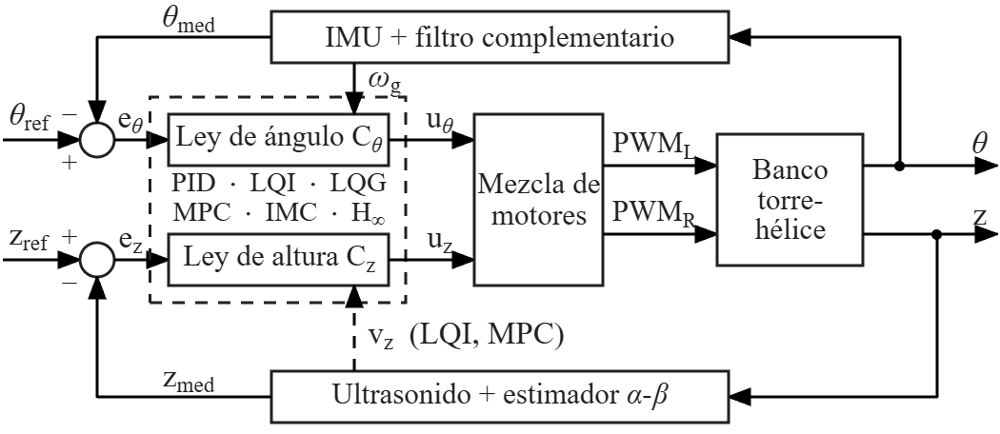

Proyecto · Control
Tower: banco torre-hélice de 2 GDL
Seis leyes de control (PID, LQI, LQG, MPC, IMC y H∞) corriendo en un Arduino, comparadas en el mismo banco y con el mismo protocolo de vuelo. Aquí está el contexto del proyecto y el firmware completo de las seis.
¿Qué es?
Un brazo con dos motores brushless pivota sobre un carro que sube y baja por dos guías verticales. La suma de los empujes levanta el carro (altura z, medida con un sensor ultrasónico) y su diferencia inclina el brazo (ángulo θ, estimado con una unidad inercial y un filtro complementario). En pequeño, es el mismo problema que tiene un dron: sostener la altura y mantenerse nivelado.
¿Qué buscamos?
Comparar seis leyes de control en el mismo hardware y en las mismas condiciones. Para que las diferencias reflejen la estructura de cada ley y no lo agresiva que quedó su sintonía, cada una se ajustó para que su controlador de ángulo tenga la misma ganancia a 6 rad/s (0.95 Hz), la frecuencia a la que oscila el brazo en vuelo.
Con cada ley se hicieron vuelos repetidos con el mismo protocolo: despegue, subida por rampa hasta 10 cm y crucero. El análisis y los resultados están en el paper que enviamos a la conferencia IEEE ICSC 2026.
Estado: paper en revisión. Cuando se publique, aquí pondremos la referencia completa y los resultados.

Arquitectura de control
Los seis programas comparten todo lo demás: lectura de sensores, filtros, fases de vuelo (nivelar, buscar el empuje de vuelo, subir, crucero y aterrizar), protecciones y mezcla de motores con prioridad al ángulo. Solo cambia el bloque de la ley de control (el recuadro punteado).

Las seis leyes
Todas tienen la misma ganancia del controlador de ángulo a 6 rad/s; lo que cambia es la fase.
Las ganancias de cada una están en controladores_gen.h, generado por el script de diseño.
| Ley | Carpeta | Cómo funciona | Fase de Cθ a 6 rad/s |
|---|---|---|---|
| PID | ctrl_1_pid | PID clásico en cada canal. Es la referencia: las otras cinco se ajustaron para igualar su ganancia. | +60.8° |
| LQI | ctrl_2_lqi | Regulador lineal cuadrático con acción integral, sobre los estados medidos. | +79.2° |
| LQG | ctrl_3_lqg | El LQI más un filtro de Kalman: realimenta el estado estimado en vez del medido. | +78.8° |
| MPC | ctrl_4_mpc | Control predictivo con horizonte de 0.8 s. La solución sin restricciones se precalcula como ganancia; las restricciones las aplica el firmware. | +73.3° |
| IMC | ctrl_5_imc | Control por modelo interno, con un solo parámetro de sintonía (λ). | +48.8° |
| H∞ | ctrl_6_hinf | Control robusto por conformación de lazo de Glover–McFarlane, de 4.º orden en espacio de estados. | +41.8° |
Hardware
- Microcontrolador
- Arduino Uno (AVR de 8 bits, 16 MHz). Lazo de control a 200 Hz.
- Ángulo
- Unidad inercial por I²C y filtro complementario.
- Altura
- Sensor ultrasónico HC-SR04 a 50 Hz y estimador α-β de altura y velocidad.
- Motores
- Dos motores brushless con ESC de 30 A, mando PWM de 1000 a 2000 µs.
- Alimentación
- Dos fuentes de 12 V, una por motor. El Arduino vigila ambas con divisores de tensión.
- Seguridad
- Botón de paro de emergencia por interrupción y aterrizaje automático si el ángulo se va de rango.
- Telemetría
- CSV por el puerto serie a 115200 baudios.
| Conexión | Pin |
|---|---|
| Motor izquierdo (ESC) | D10 |
| Motor derecho (ESC) | D9 |
| Botón de emergencia | D2 |
| Ultrasonido TRIG / ECHO | D7 / D6 |
| IMU (I²C, dirección 0x68) | A4 / A5 |
| Tensión fuente izquierda / derecha | A0 / A1 |
Firmware
Elige una ley para ver su código. Cada carpeta trae su .ino y su
controladores_gen.h; se abren directamente en el Arduino IDE.
firmware/ctrl_1_pid/ctrl_1_pid.ino
Cargando…
Cómo cargarlo y volar
- Instala el Arduino IDE.
- Descarga el firmware (.zip) y descomprímelo.
- Abre
ctrl_X_ley/ctrl_X_ley.ino. La carpeta debe llamarse igual que el.inoy tener al lado sucontroladores_gen.h. - Elige la placa Arduino Uno y el puerto, y pulsa Subir.
- Abre el Monitor Serie a 115200 baudios.
- Antes del primer vuelo: i para identificar los motores, o con el brazo nivelado a mano y h para revisar el estado.
- Con todo en orden, C para volar y L para aterrizar.
| Comando | Qué hace |
|---|---|
| C | Arranca: mide el piso, nivela, despega y sube por la rampa. |
| L | Aterrizaje controlado. |
| S | Parada inmediata: apaga los motores. |
| h | Estado: ángulo, tensiones, trim, vibración… |
| z10 | Consigna de altura en cm. |
| a0.5 | Escala del lazo de ángulo (0 a 2). |
| i | Identifica qué motor está en cada pin. |
| o | Recalibra el cero del ángulo. |
| + / - | Ajusta el trim entre motores en 5 µs. |
Seguridad: las hélices giran con mucha energía. Prueba siempre con el banco fijado, sin manos cerca y con el botón de emergencia a mano. Las leyes IMC y H∞ conviene probarlas primero con a0.5 y subir desde ahí.
Publicación
Experimental Comparison of Control Laws on a 2-DOF Tower-Propeller Testbed.
G. H. Ramos Astuhuamán, E. A. Chávez Depaz, J. N. Naupay Fabian, D. A. Miranda Zamora, B. S. Ramos Cadenillas,
S. Rejas Córdova y D. Inga Narváez.
Enviado a la 14th International Conference on Systems and Control (ICSC 2026), Oporto, Portugal · en revisión.
Si usas este código, cita el paper. La referencia completa estará aquí cuando se publique.